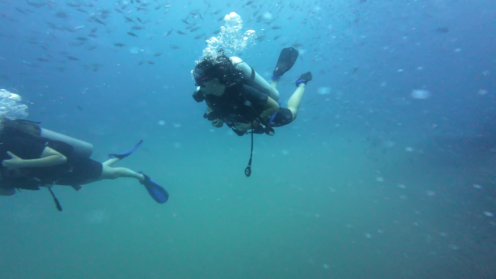
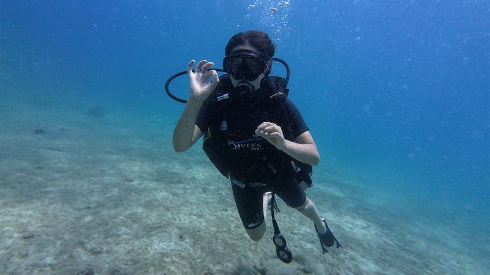
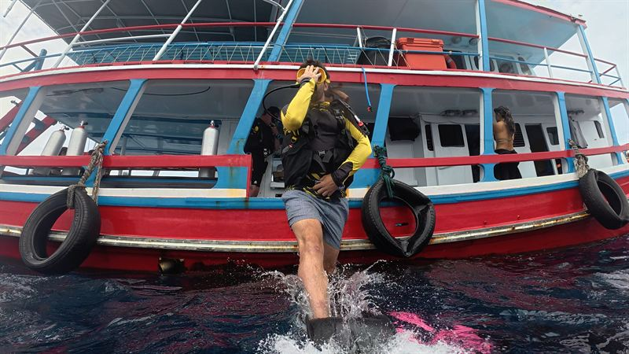

Theorie online
Du bekommst das digitale SSI-Lernmaterial, sobald du buchst. Registrier dich von zu Hause und fang schon vor dem Urlaub mit dem Lernen an.
Bis Weihnachten fahren wir um 8:00 ab: Treffpunkt am Pier von Chaloklum um 7:45, zurück gegen 13:30–14:00.Warum?

Start / SSI-Kurse / Open Water
Lerne in drei Tagen tauchen und reise mit einem Brevet ab, mit dem du überall auf der Welt bis 18 Meter tauchen darfst. Kleine Gruppen von vier, unser eigenes Boot ab Chaloklum und deine Freiwassertauchgänge an Sail Rock, dem besten Tauchplatz im Golf — 12.900฿ mit allem inklusive.

Vier Schüler, ein Instructor
Auf einen Blick
SSI Open Water Diver ist der Kurs, der dich von jemandem, der Tauchen ausprobiert hat, zum Taucher macht. Du lernst die Theorie, übst die Fertigkeiten im flachen Wasser der Bucht von Chaloklum und setzt sie dann bei echten Tauchgängen im Golf von Thailand zusammen. Am Ende kannst du mit einem Buddy ohne Instructor bis 18 Meter tauchen.
So läuft der Kurs ab
Jeder Kurs beginnt im flachen Wasser der Bucht von Chaloklum, direkt vor der Tauchbasis, und geht dann weiter zu echten Tauchgängen an Sail Rock. Der genaue Plan richtet sich nach dem Meer und der Gruppe, aber so sieht er im Groben aus.
Du bekommst das digitale SSI-Lernmaterial, sobald du buchst. Registrier dich von zu Hause und fang schon vor dem Urlaub mit dem Lernen an.
Theoriewiederholung, dann die Grundübungen eine nach der anderen im flachen Wasser vor dem Strand und ein kurzer erster Tauchgang. Ein Pool nur, wenn das Meer es nicht zulässt.
Mit dem Boot raus nach Sail Rock. Du wiederholst die Übungen bei echten Tauchgängen und fängst an, die Fische zu genießen — Barrakudas, Fledermausfische, Stachelmakrelen.
Deine letzten Ausbildungstauchgänge, etwas tiefer, dann die Abschlussprüfung. Wenn das Meer oder die Gruppe es erfordern, tauchen wir stattdessen an der ruhigeren, flacheren Koh Ma.
Dein SSI-Brevet erscheint sofort in der MySSI-App und wird von Tauchbasen auf der ganzen Welt anerkannt.

Dein erster großer Schritt ins Wasser
Wer kann mitmachen
Du musst noch nie getaucht sein und musst kein Sportler sein. Wenn du dich im Wasser wohlfühlst und einigermaßen gesund bist, ist dieser Kurs für dich.
Warum bei uns lernen
Koh Phangan ist ruhiger als Koh Tao, und seine Tauchplätze auch. Ohne Menschenmenge um dich herum zu lernen, macht die ersten Tauchgänge viel entspannter — und du tauchst trotzdem an Sail Rock, das näher an unserem Pier in Chaloklum liegt als an jedem anderen Ort der Insel.
Fragen
12.900฿ pro Person. Darin enthalten sind dein SSI-Instructor, das digitale Lernmaterial, die komplette Ausrüstung, die Bootstage mit Mittagessen und Getränken und dein Brevet. Einziges optionales Extra ist eine Unterwasserkamera (Verleih 600฿) oder ein Video deiner Tauchgänge, gefilmt von deinem Instructor (800฿).
Drei Tage. Vor dem ersten Tag kannst du die Theorie online in deinem eigenen Tempo lesen, so bleibt mehr Zeit im Wasser.
Ja. SSI und PADI bilden nach denselben internationalen Standards aus, und ein SSI-Open-Water-Diver-Brevet wird von Tauchbasen auf der ganzen Welt akzeptiert — auch von PADI-Basen.
Nein. Du musst dich im Wasser wohlfühlen: eine kurze Strecke ohne Pause schwimmen und ein paar Minuten an der Oberfläche treiben können. Die Geschwindigkeit spielt keine Rolle, und wir prüfen das gemeinsam am ersten Tag.
Ja, ab 10 Jahren. Taucher zwischen 10 und 14 werden als SSI Junior Open Water Diver brevetiert, mit einigen Tiefenbegrenzungen bis zum 15. Geburtstag; dann wird die Karte zum vollen Open Water Diver hochgestuft.
Fang mit einem Try Dive an: ein Tag, kein Tauchschein nötig. Wenn es dir gefällt, sag es uns, und wir erklären dir, wie du mit dem Open-Water-Kurs weitermachst. Nervöse Schüler sind ganz normal, und kleine Gruppen von vier geben uns Zeit für alle.
Die ersten Übungen machen wir in der Bucht von Chaloklum, im flachen Wasser vor dem Strand. Wir ziehen das Meer einem Pool vor: Salzwasser fühlt sich anders an als Süßwasser, und der Strand bietet mehr Platz und einen ersten kurzen Tauchgang. Die Freiwassertauchgänge an Tag zwei und drei finden an Sail Rock statt, einer Felsspitze im offenen Meer, etwa eine Stunde mit dem Boot. Wenn das Meer oder die Schüler es erfordern, fahren wir stattdessen nach Koh Ma, einem ruhigeren, flacheren Korallengarten zehn Minuten vom Pier.
Badesachen, ein Handtuch, Sonnenschutz und etwas Warmes für die Rückfahrt. Die komplette Tauchausrüstung ist in deiner Größe auf dem Boot. Wenn du eine Brille trägst und eine Maske mit Sehstärke brauchst, sag uns vor deiner Ankunft Bescheid.
Die übliche Richtlinie: 12 Stunden nach einem einzelnen flachen Tauchgang, 18 Stunden nach mehreren Tauchgängen oder einem Tieftauchgang und 24 Stunden nach einem Dekompressionstauchgang. Im Kurs gibt es mehrere Tauchgänge pro Tag, plane also 18 Stunden ein. Für die Fähre musst du nicht warten: Wir sind gegen 15:30 zurück am Pier, rechtzeitig für eine Fähre um 17:00.
Schick uns deine Daten auf WhatsApp, und wir bestätigen dir einen Platz in der nächsten Open-Water-Gruppe. Eine Anzahlung sichert deinen Platz, der Rest wird bar oder per Revolut bezahlt.
Schon brevetiert? Weiter geht es mit den nächsten Kursen oder komm mit auf einen Fun Dive.